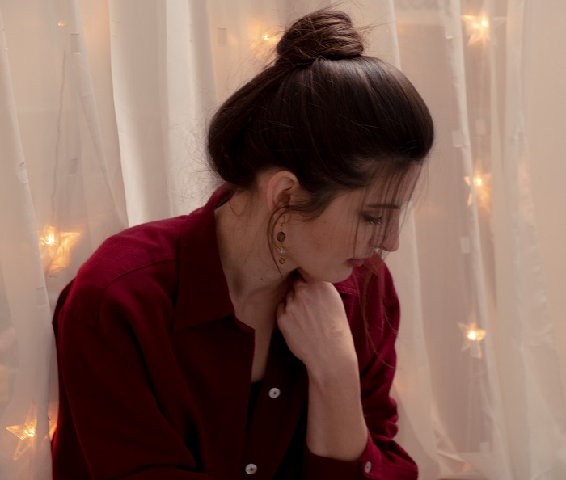

Látky mě fascinovaly barevností i strukturou dříve než jsem začala chodit a mým studijním oborem se staly jak jinak než textilie. V bodě, kdy mi došlo, že svůj život chci prožít tak, jaká skutečně jsem a jít za svou touhou i posláním, byla pro mě osobní stylistka jasná volba. V současnosti také učím ženy se líčit a především pečovat o pleť. Táhnu za provaz s Fashion Revolution v Brně. Preferuji uvědomělý přístup k módě, podporuji český design a lokální návrháře.
Baví mě poznávat prostřednictvím svého povolání všechny ženy i muže, kteří ke mně najdou cestu a nebo já k nim. Miluji být průvodcem k jedinečnosti osobitého stylu člověka. Těší mě učit poznávat, rozeznávat a zacházet s tím, co komu sluší a hledat varianty. Základní princip, který předávám, je možný osvojit si trvale a v tom spočívá i jeho hodnota. Důležitá je pro mě Vaše výsledná spokojenost. Umět vypadat je projevem respektu k sobě samotnému, taková naše živá vypovídající vizitka, což prokazuje i síla prvního dojmu. Oděv tvoří něco jako naši druhou kůži a chrání naše tělo, musí, co nejlépe sloužit nám, ne my jemu.
Jde sestavit šatník, který budeme milovat, v udržitelné a efektivní formě. S jistotou vědět, co dnes na sebe a, co mi sluší. Takový šatník ve výsledku ušetří spoustu času a peněz a zároveň posílí sebevědomí. Ráda Vám pomohu být blíž Vaší jedinečné vnější i vnitřní harmonii.
Máš zájem o konzultaci?
kontaktuj mě